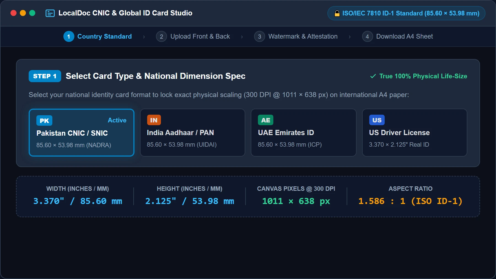
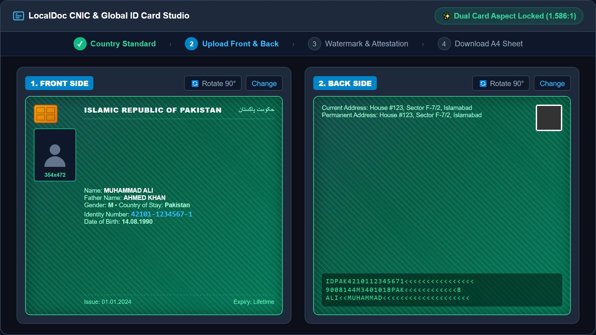
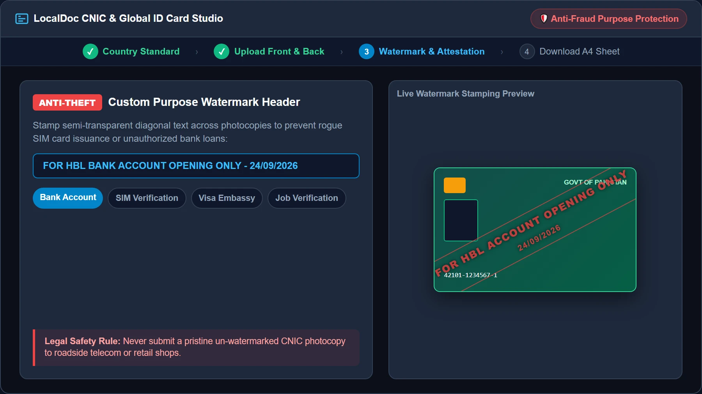
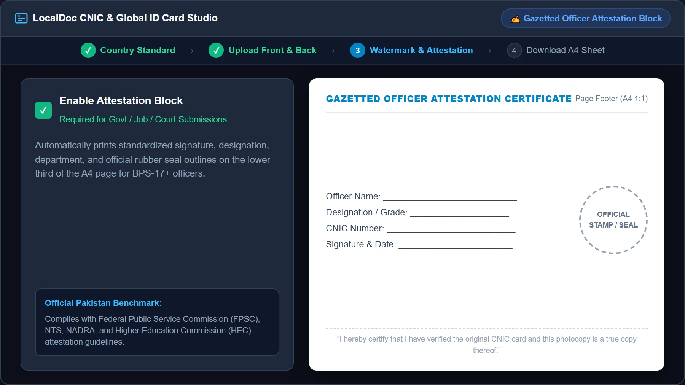
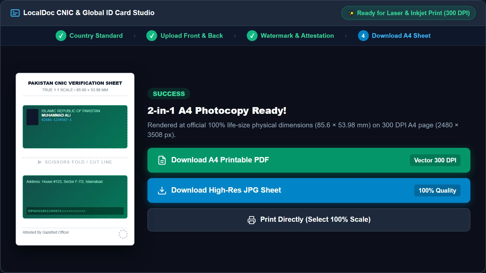

Official CNIC Card Size (Inches, MM & Pixels) + 2-in-1 A4 Photocopy Guide
Official Pakistan CNIC Card Size (Inches, MM & Print Pixels)
The official physical size of a Pakistan NADRA CNIC (National Identity Card / Smart NIC) is exactly 3.370 × 2.125 inches (or 85.60 × 53.98 mm / 8.56 × 5.40 cm) with a 3.18 mm corner radius conforming to ISO/IEC 7810 ID-1. For printing at 300 DPI, the digital dimensions are exactly 1011 × 638 pixels. For online Pak-Identity mobile submissions, the photo must be 354 × 472 pixels.
Benchmark Summary: Complete National ID Standards
- Universal Dimension: Standardized under ISO/IEC 7810 ID-1 (identical footprint to credit cards, driving licenses, and smart cards globally).
- Print Resolution Requirement: 300 DPI minimum (1011 × 638 px) to preserve micro-printed guilloche patterns, bar codes, and national seal crests.
- 2-in-1 A4 Placement: Both Front and Back must be arranged vertically on a single A4 page with ≥15mm separation for clear scissor cropping.
- Security Best Practice: Never provide un-watermarked photocopies. Add purpose-specific protective text (e.g. "FOR SIM VERIFICATION ONLY") and gazetted attestation stamps.
- Privacy Architecture: Processing occurs 100% inside client browser memory via HTML5 Canvas. Zero identity data or photos ever reach external servers.
1. Official Pakistan NADRA CNIC Physical Dimensions
The Computerised National Identity Card (CNIC) and the Smart National Identity Card (SNIC) issued by Pakistan's National Database and Registration Authority (NADRA) strictly conform to the international standard ISO/IEC 7810 ID-1. This is the exact same form factor used by standard credit cards (EMV), driving licences across the European Union and United States, and national identification smart cards worldwide.
| Measurement Unit | Width | Height | Corner Radius | Standard Application |
|---|---|---|---|---|
| Millimeters (mm) | 85.60 mm | 53.98 mm | 3.18 mm | Compliant NADRA & ISO standard |
| Centimeters (cm) | 8.56 cm | 5.40 cm | 0.318 cm | Physical ruler verification |
| Inches (in) | 3.370 in | 2.125 in | 0.125 in (1/8") | US & Imperial print settings |
| Pixels @ 300 DPI | 1,011 px | 638 px | 38 px | Commercial laser & photo print |
| Pixels @ 600 DPI | 2,022 px | 1,276 px | 75 px | High-security archive & biometric scanning |
| Pixels @ 72 DPI (Web) | 243 px | 153 px | 9 px | Web preview thumbnail only (not for print) |
1.1 CNIC Size in Inches (Imperial Dimensions for Word & Photoshop)
When setting up templates in Microsoft Word, Google Docs, or Adobe Photoshop with Imperial rulers, the exact dimensions of a Pakistan CNIC are 3.370 inches in width and 2.125 inches in height. In fractional carpentry/printing notation, this is approximately 3⅜ inches wide by 2⅛ inches tall. The card corner rounding is exactly ⅛ inch (0.125 in / 3.18 mm) radius.
1.2 CNIC Size for Print (300 DPI vs 600 DPI Resolution)
To print a crisp, readable photocopy or PVC replacement card that will not be rejected by Pakistani banks, embassies, or government ministries, the image must be rendered at 300 DPI (Dots Per Inch) or higher:
- Standard Print (300 DPI): Exactly
1011 × 638 pixels. This is the optimal balance for laser printers, inkjet photocopy shops, and document PDF submissions. - High-Definition Print (600 DPI): Exactly
2022 × 1276 pixels. Recommended for ultra-fine micro-text, QR code scanning, and biometric fingerprint ridge clarity. - Important Printer Setting: In your operating system print dialog, always set Page Scaling to "100%" or "Actual Size". Selecting "Fit to Printable Area" will shrink your CNIC by 3%–6%, causing bank scanners and biometric kiosks to reject it.
1.3 NIC Card vs Smart CNIC (SNIC) Dimensions: Is There Any Difference?
Many citizens wonder if the older paper-laminated National Identity Card (NIC) differs in size from the newer chip-based Smart National Identity Card (SNIC). There is no difference in dimensions. Both cards measure exactly 85.60 × 53.98 mm (3.370 × 2.125 inches). The only differences are material (polycarbonate with an embedded gold chip in the SNIC) and data encoding (MRZ machine-readable lines on the reverse side).
2. Global National ID Card Dimensional Comparison
Whether you are preparing an Indian Aadhaar or PAN card, a UAE Emirates ID, a Saudi Iqama, a US State Driver's License, or a Bangladesh Smart NID, international identity cards share universal dimensions under ISO 7810 ID-1:
| Card Type & Country | Physical Size (mm) | Aspect Ratio | Standard A4 Print Mode |
|---|---|---|---|
| Pakistan CNIC / SNIC / NICOP | 85.60 × 53.98 mm | 1.586 : 1 | 2-in-1 Single Page A4 (100% True Scale) |
| India PAN Card & Aadhaar PVC | 85.60 × 53.98 mm | 1.586 : 1 | 2-in-1 Single Page A4 (100% True Scale) |
| UAE Emirates ID | 85.60 × 53.98 mm | 1.586 : 1 | 2-in-1 Single Page A4 with Attestation Block |
| Saudi Arabia Muqeem / Iqama | 85.60 × 53.98 mm | 1.586 : 1 | 2-in-1 Single Page A4 (100% True Scale) |
| US Real ID / State Driver's License | 85.60 × 53.98 mm | 1.586 : 1 | 2-in-1 US Letter or A4 Format |
| UK Photocard Driving Licence | 85.60 × 53.98 mm | 1.586 : 1 | 2-in-1 Single Page A4 (100% True Scale) |
| Bangladesh Smart NID Card | 85.60 × 53.98 mm | 1.586 : 1 | 2-in-1 Single Page A4 (100% True Scale) |
3. Visual Step-by-Step Walkthrough: 2-in-1 A4 ID Card Photocopying
Traditionally, making a photocopy of both sides of an ID card on a single piece of paper required visiting a physical print shop and watching an operator manually flip the card on a glass scanner bed. This wastes paper, risks card misplacement, and costs money.
With the LocalDoc CNIC & Global ID Card Studio, you can create a flawless, life-size 2-in-1 photocopy right from your smartphone browser with protective watermarks and attestation certification using our 5-step visual workflow:
Select Card Format & National Dimension Standard
Open the CNIC & ID Studio and select your national card format. Choosing Pakistan CNIC / Smart Card locks the internal geometry to 85.60 × 53.98 mm (3.370 × 2.125 inches) adhering to ISO/IEC 7810 ID-1. Presets are also available for Indian Aadhaar/PAN, UAE Emirates ID, Saudi Iqama, and US Driver Licenses.

Upload or Capture Front & Back Sides (Dual Dropzones)
Tap the Front Side and Back Side dropzones to upload existing clear photos from your photo gallery, or snap live captures directly with your smartphone camera. Each card slot is locked to the 1.586 : 1 aspect ratio to prevent stretching. Use the 🔄 Rotate 90° button if your photos were taken sideways.

Apply Purpose-Specific Anti-Fraud Watermark
Protect yourself against identity fraud, rogue SIM card registrations, and unauthorized credit loans. Select one of the quick watermark pills (such as Bank Account, SIM Verification, or Visa Embassy) or type a custom note. The system renders semi-transparent diagonal legal text across the photocopy face.

Enable Gazetted Officer Attestation Stamp & Certificate Block
Submitting to FPSC, NADRA, government ministries, or public university admissions? Check "Include Attestation / Signature & Official Stamp area at bottom". This adds standardized officer signature lines, designation, department, date, and a round official rubber stamp guide to the lower third of the A4 page.

Export 300 DPI True 1:1 Life-Size A4 Sheet (PDF or High-Res JPG)
Click "Generate 2-in-1 A4 Photocopy Sheet". The engine arranges both sides vertically on a standard A4 canvas (2480 × 3508 pixels @ 300 DPI) with scissors cut guidelines. Click Download A4 PDF for crisp vector document submissions, Download High-Res JPG for digital portals, or Print Directly (always set printer scaling to "100%" or "Actual Size").

4. Preventing Identity Theft: Protective Purpose Watermarks
⚠ Critical Identity Security Warning
Never submit a clean, un-watermarked photocopy of your CNIC or National ID to private vendors, retail shops, or telecom franchise operators. Unscrupulous operators can photocopy your card again and register fraudulent SIM cards, obtain illicit loans, or open shadow accounts under your name.
To protect yourself, write or stamp a semi-transparent diagonal text across the face of the copy clearly defining its sole legal purpose:
- For Bank Accounts:
FOR HBL / MEEZAN / UBL ACCOUNT OPENING ONLY - [DATE] - For SIM Cards:
FOR JAZZ / ZONG SIM VERIFICATION ONLY - [DATE] - For Visa & Immigration:
FOR SCHENGEN / UK VISA SUBMISSION ONLY - For Job Applications:
FOR EMPLOYMENT VERIFICATION AT [COMPANY NAME] ONLY
The LocalDoc CNIC Studio allows you to apply these protective purpose watermarks digitally before printing, saving you time and ensuring uniform legal protection.
5. Compliant NADRA Pak-Identity Biometric Photo Requirements
When renewing a Pakistani CNIC or applying for a NICOP / POC card through the official NADRA Pak-Identity portal or mobile application, the uploaded photograph must meet rigorous biometric standards:
| Parameter | NADRA Pak-Identity Requirement | LocalDoc Auto-Compliance |
|---|---|---|
| Dimensions | 350 × 467 pixels to 354 × 472 pixels | Locked to exact 354 × 472 px @ 300 DPI |
| Aspect Ratio | 3:4 portrait ratio (35mm wide × 45mm high) | Exact 35×45mm biometric framing |
| File Size Limit | Maximum 5 MB (Recommended < 200 KB) | Optimized to clean ~80–150 KB |
| Background Color | Pure Plain White (zero shadows or patterns) | AI/Canvas Pure White background option |
| Facial Framing | Head must occupy 70% to 80% of frame | Biometric alignment guidelines built-in |
| Eyeglasses | Glare-free, tinted lenses strictly prohibited | Recommended to remove glasses for 100% acceptance |
| Facial Expression | Neutral, mouth closed, looking straight at camera | Real-time framing guide |
6. Why Zero-Upload Local Processing Is Vital for National IDs
A national identity card contains the most sensitive Personally Identifiable Information (PII) of your life: your 13-digit national identity number, father's name, permanent residential address, date of birth, family tree references, and biometric signature.
Conventional cloud converters upload your images to third-party web servers where they can be cached in unencrypted temp directories, scraped by tracking bots, or exposed in data breaches.
LocalDoc operates on a zero-upload security model:
- All image cropping, aspect locking, A4 positioning, and watermarking execute exclusively inside your device's browser memory (RAM) using the modern HTML5 Canvas 2D API.
- Zero network requests are made with your document pixels.
- You can disconnect your Wi-Fi or turn on Airplane Mode after the page loads, and the CNIC & ID Studio continues to function with 100% fidelity.
Ready to Print Your 2-in-1 ID Photocopy?
Create official 100% true-scale A4 sheets with both front and back sides, custom purpose watermarks, and attestation boxes in seconds.
Open CNIC & Global ID Studio →Frequently Asked Questions
Q: What is the official Pakistan CNIC size in inches?
The official size of a Pakistan NADRA CNIC in inches is exactly 3.370 × 2.125 inches (approx 3⅜ by 2⅛ inches). It features rounded corners with a ⅛-inch (0.125 in / 3.18 mm) radius, adhering strictly to the international ISO/IEC 7810 ID-1 standard.
Q: What is the CNIC card size in mm and cm?
In metric measurements, a Pakistan CNIC is exactly 85.60 mm wide by 53.98 mm high (or 8.56 × 5.40 cm) with a standard card thickness of 0.76 mm.
Q: What is the exact CNIC size for print in pixels at 300 DPI?
At 300 DPI (Dots Per Inch, the international commercial print benchmark), a CNIC card is exactly 1011 pixels wide by 638 pixels high. For 600 DPI ultra-high definition printing, it is 2022 × 1276 pixels.
Q: Is the older laminated NIC card size different from the new Smart CNIC?
No. Both older laminated NICs and new Smart CNICs (SNICs) have identical physical dimensions (85.60 × 53.98 mm / 3.370 × 2.125 inches). Modern SNICs add an embedded microchip, national crest hologram, and MRZ lines on the back.
Q: Can I use this for non-Pakistani ID cards like Indian PAN or UAE Emirates ID?
Yes! All modern national identity cards, including Indian PAN cards, Aadhaar PVC cards, UAE Emirates IDs, Saudi Iqamas, and European/US driving licences, adhere to the same ISO/IEC 7810 ID-1 standard (85.60 × 53.98 mm). The 2-in-1 photocopy mode works flawlessly for all of them.
Q: How do I ensure my printer prints the copy at exact 100% life-size?
When printing the downloaded PDF or JPG from your computer or phone, always verify in the print dialogue that Scale is set to "100%" or "Actual Size". Do NOT choose "Fit to Page" or "Shrink to Fit", as this will reduce the card size by 3% to 5%.
Q: What printer paper should I use for official submissions?
For bank accounts, court filings, and embassy dossiers, use standard 80 GSM A4 bond paper. If you are printing photo identity cards for lamination or badges, use 220–260 GSM glossy photo paper.
Q: Is it safe to generate CNIC photocopies on LocalDoc?
LocalDoc is specifically designed with a 100% client-side zero-upload privacy architecture. Your photos never leave your device, meaning zero cloud storage, zero transmission leaks, and zero risk of your identity card being intercepted.